Start
How to read this suite
This folder is a process file. Presence of a chart is not a short, not a hedge, and not an allocation. The first seven figures are a teaching sketch of one identity. The rest are snapshots taken from the unwind notes as of 5 September 2026.
Every chart is tagged. Measured means the number comes from a filing, an official API card, or a named published series. Hypothesis means the number was chosen to show a relationship. Mixed means the panel combines both, and the caption says which is which.
The claim these pictures belong to is H5: listed token prices and GPU rental are the cash that installed chips actually produce. If that conversion rate falls while residual-value guarantees and take-or-pay contracts stay large, the last generation has not paid for itself and the next generation’s paper is already live.
- P — price
- Dollars the seller receives for one million tokens. A token is a small piece of text the model reads or writes. P is a realized price, not always the advertised flagship list price.
- Cv — variable cost
- The extra cost of serving one more million tokens, in the same unit. Energy, cloud markup, and the part of running a cluster that rises with volume sit here. Training runs and chips already bought do not.
- V — volume
- How many tokens are sold in the month. Volume is not revenue. Revenue is P times V.
- F — fixed cost
- The monthly cost that does not shrink when fewer tokens are sold. In the sketch F is 900 million dollars per month. That round number is Hypothesis.
- P − Cv — contribution margin
- Cash left from one million tokens after paying the extra cost of serving them, and before paying F. If this difference is negative, more volume makes the monthly loss larger.
Keys: J next figure, K previous. Open this file in a browser from the cloned repo so the images load.
The identity · Hypothesis
Revenue can peak while tokens explode
Revenue is price times volume. If price falls faster than volume grows, monthly revenue can rise for a while and then fall.
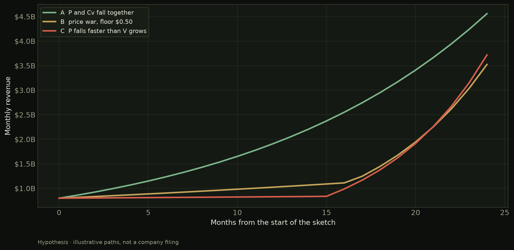
What this shows. Path A lets price and variable cost fall together. Path B is a price war with a floor of 50 cents per million tokens. Path C cuts price faster still. Only the sketch knows these paths. They are not three companies.
How to read it. The vertical axis is monthly revenue in dollars, not tokens. A rising token count can sit under a falling dollar line.
What would change it. A measured series of blended realized P times tokens sold. That series does not exist in this pack.
Only one regime is saved by volume
Hold price and variable cost still, and slide volume. The slope of profit tells you whether more tokens help.
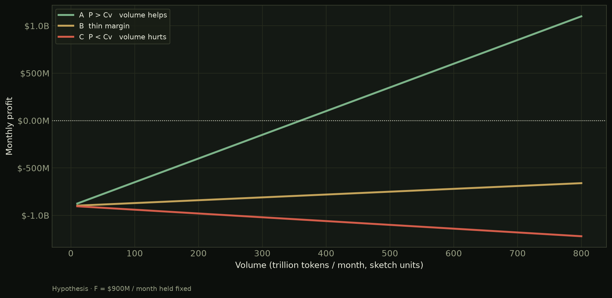
What this shows. Green: price is well above variable cost, so extra volume covers fixed cost. Amber: the margin is thin, so you need a great deal of volume. Red: price is below variable cost, so extra volume deepens the hole.
How to read it. The dotted line is zero profit. Crossing it from below is break-even. The red line never crosses it by going right.
The identity, with P and Cv held still
This is the same formula drawn so the slope versus volume is the whole point.
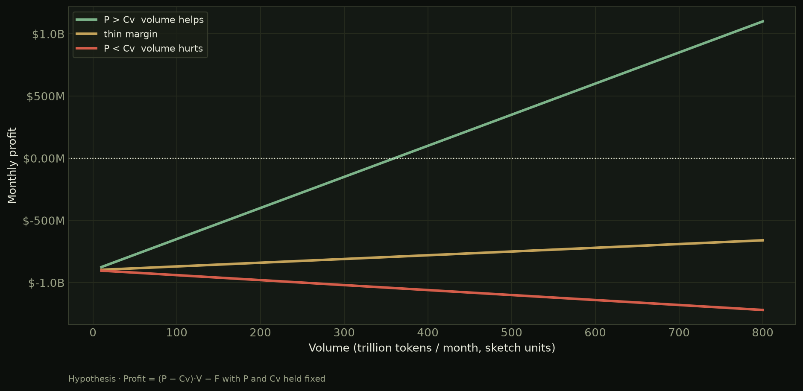
What this shows. Profit equals (P minus Cv) times V, minus F. Negative unit margin means the line falls as volume rises. That is the careful version of “volume will not balance the books.”
Break-even volume heads to infinity
Tokens required to cover F equal F divided by (P minus Cv). As P approaches Cv, that quotient has no ceiling.
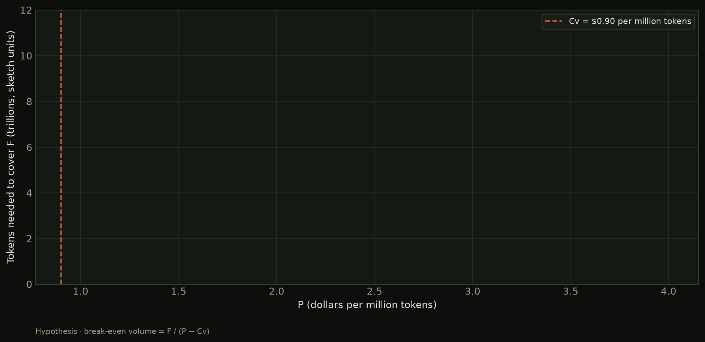
What this shows. The red dashed line is variable cost at 90 cents per million tokens. To the right, some finite volume still covers F. To the left, selling more cannot cover F. The sketch uses F of 900 million dollars a month.
Volume and revenue can look fine while profit does not
On the price-war path, tokens and even dollars of revenue keep rising. Fixed cost does not shrink. Profit does.
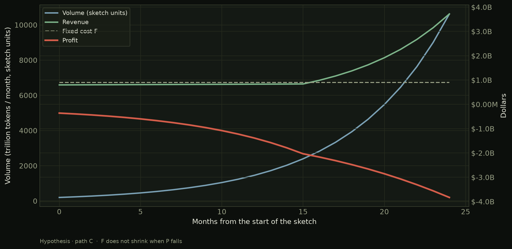
What this shows. The left axis is volume. The right axis is dollars. The grey dashed line is F. Green revenue can sit near F while red profit is already negative, because variable cost is also being paid.
How to read it. Do not compare the blue volume line’s height to the dollar lines. They are different units sharing a month axis.
Filling the boxes cheaper
A GPU-hour is one hour on one graphics processor. If the hours are already paid for, a lower token price makes each hour produce less cash.
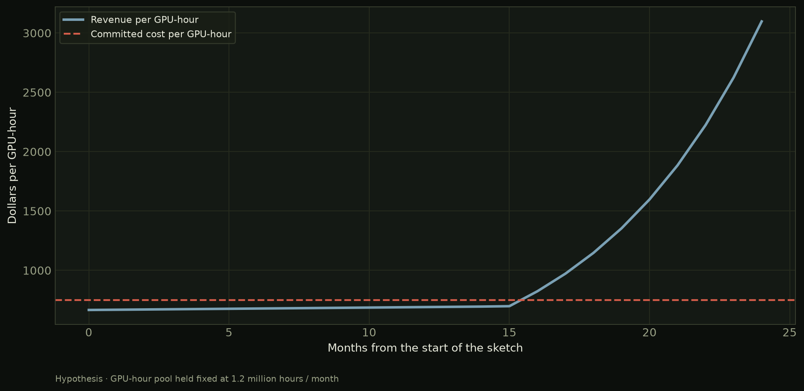
What this shows. The red dashed line is committed cost per hour, F spread across a fixed pool of 1.2 million hours a month. That pool size is Hypothesis. The blue line is token revenue per hour on path C.
The flagship list can hold while blended P falls
Blended realized price is the volume-weighted average of what customers actually buy. That blended P is what enters the profit formula.
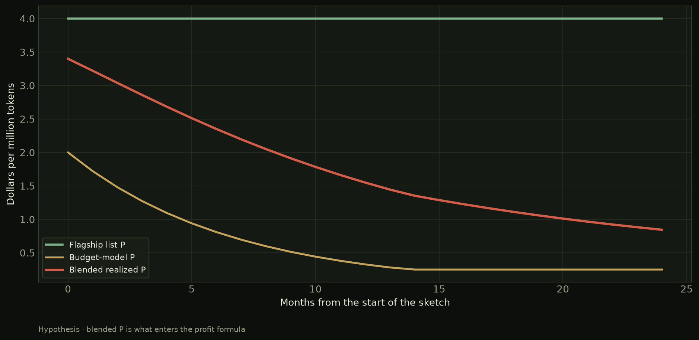
What this shows. Green is an unchanged flagship list. Amber is a cheaper model. Red is the mix. Customers routing to the cheap tier pull the average down without a flagship cut.
What would change it. A measured mix of tokens by model. Official cards in the next chapter are a snapshot of list prices, not of mix.
What silicon can charge · Measured
Official cards, blended the same way
Each bar is (three parts input plus one part output) divided by four. That 3:1 blend is a convention used to compare cards. It is not a filing.
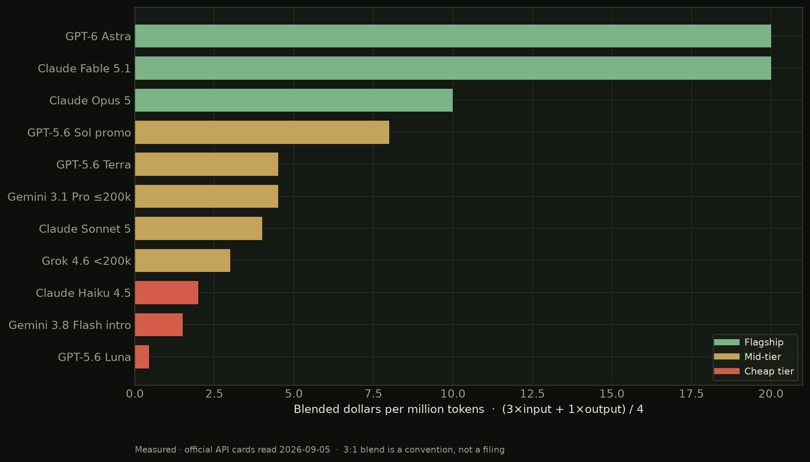
What this shows. Flagship cards cluster near 10 to 20 dollars blended. The cheap tier, including GPT-5.6 Luna at 20 cents input and 1.20 dollars output, sits far below. Mid-tier cards occupy the middle.
How to read it. These are list prices on official API pages read on 5 September 2026. They are not tokens sold. Sol’s 4 / 20 row is labeled promotional through at least 21 November 2026. Gemini 3.8 Flash’s 0.75 / 3.75 row is introductory through 31 December 2026.
Output is the expensive side
Reasoning traces and long answers burn output tokens. A workload that is heavy on output pays the taller bar, not the input bar.
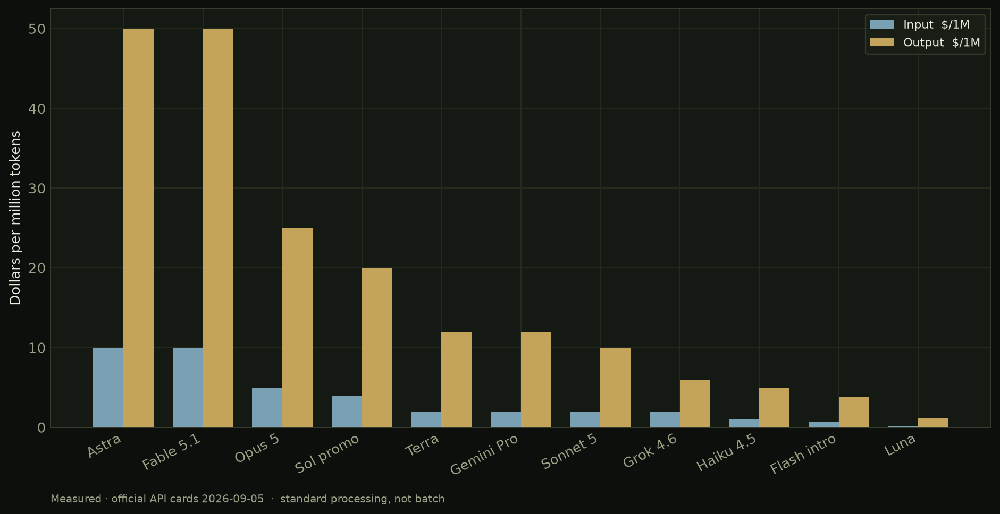
What this shows. For every card in this pack, output costs more per million tokens than input. Agent workloads that write long traces therefore realize a higher average P than a short chat on the same model — and a higher bill. Whether that bill covers Cv is a different question, and is not measured here.
The July cheap-tier cut is still on the card
On 30 July 2026 OpenAI cut GPT-5.6 Luna 80 percent and Terra 20 percent. Both cuts were still listed on 5 September.
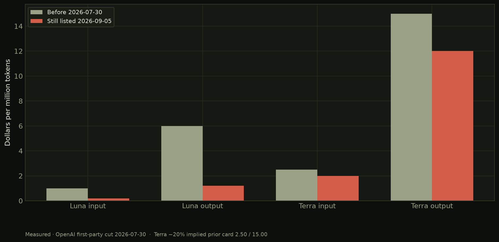
What this shows. Luna input moved from 1.00 to 0.20 dollars per million tokens. Luna output moved from 6.00 to 1.20. Terra’s −20 percent implies a prior card of 2.50 / 15.00, landing at 2.00 / 12.00. Company language called this a pass-through of serving-cost improvements. That is a measured price cut. It is not a measured statement that volume rose enough to hold dollar revenue.
Last-gen rental already clears at one-third of sticker
These are dollars per GPU-hour on a published on-demand series, not a company filing. Hyperscaler, neocloud, and marketplace are three different venues for the same silicon.
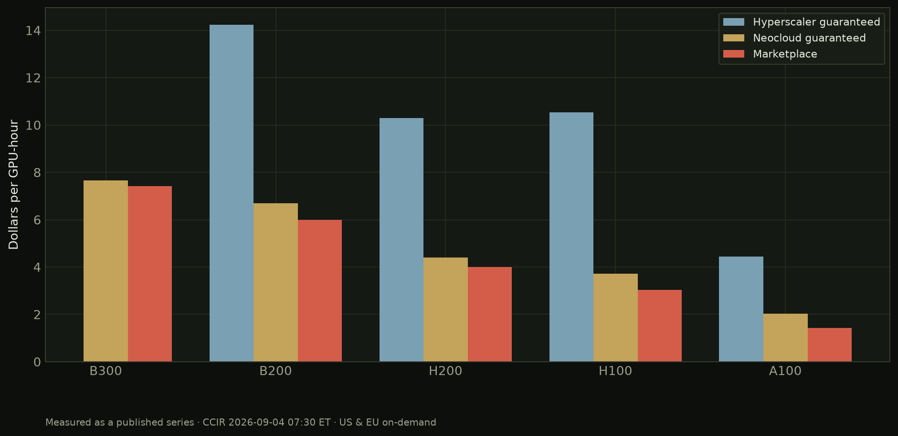
What this shows. On 4 September 2026 the CCIR guaranteed on-demand print put H100 neocloud at 3.71 dollars an hour against a hyperscaler list of 10.53. H200 and B200 show the same pattern. A residual-value guarantee written against an earlier, higher rental deck is looking at a different conversion rate than the deck.
How to read it. B300 has no hyperscaler print in this series. Interruptible rates, which are lower, are not drawn here. A rate is not utilization.
Paper on the books
The guarantee book and the rental print do not share a unit
Left panel is NVIDIA’s disclosed gross maximum exposure. Right panel is the same-week H100 rental. They are placed together because H5 is a race between those clocks, not because the axes match.
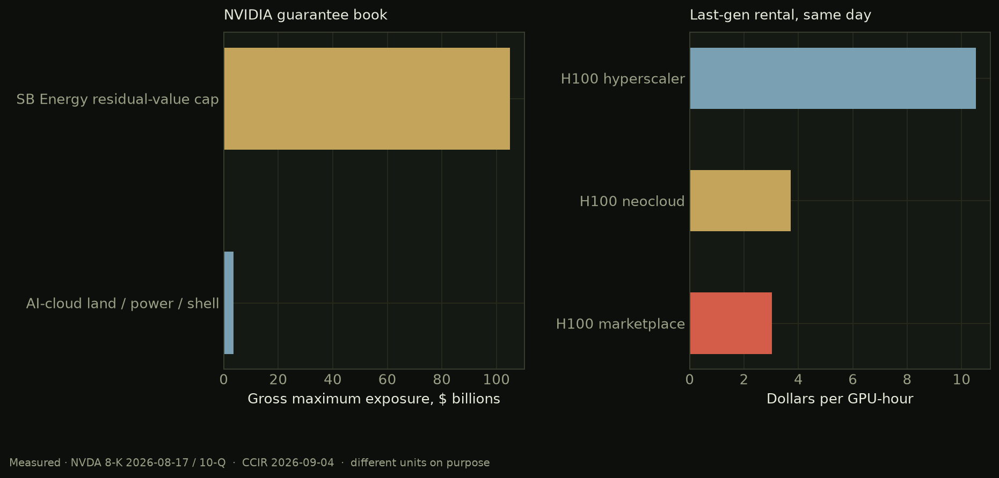
What this shows. NVIDIA’s 17 August 2026 8-K caps SB Energy residual-value guaranties at 105 billion dollars, with OpenAI as tenant. The 10-Q adds 3.5 billion of AI-cloud land, power, and shell. First phase is expected fiscal 2029. Trigger language is insolvency default or missed rent. That cap was filed after the Luna cut.
How to read it. Do not divide 105 billion by 3.71. The left axis is a legal maximum. The right axis is a spot rental. The claim is only that paper sized on a higher conversion rate is live while the cheap-tier and neocloud prints have already moved.
Announced is not funded is not guaranteed is not revenue
These bars are different kinds of paper. Adding them into one total would mix remaining performance obligations, leases, equity, and residual-value caps.
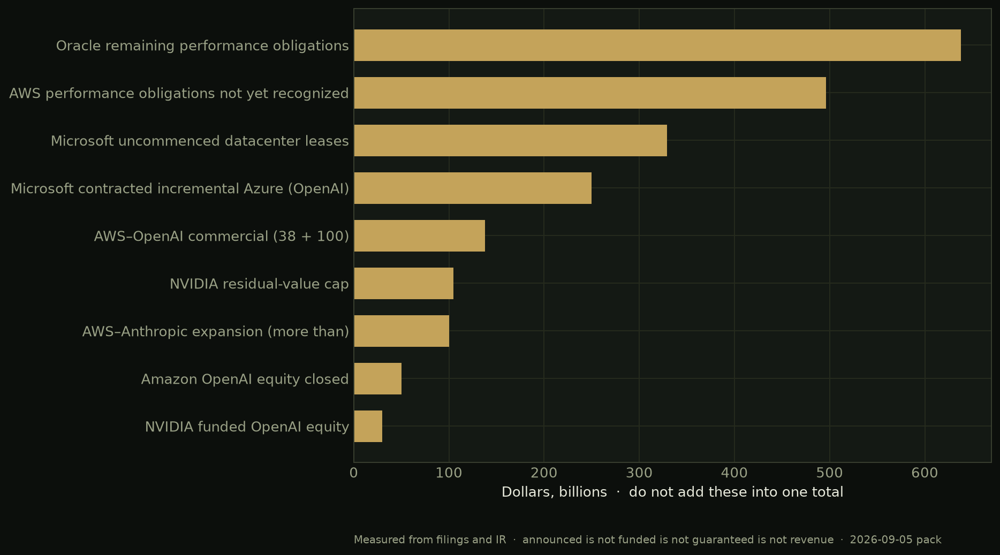
What this shows. Oracle remaining performance obligations of 638 billion dollars and AWS performance obligations not yet recognized of 496 billion are backlog, not cash in the door. Microsoft’s 329 billion of uncommenced datacenter leases are commitments to take space. NVIDIA’s funded OpenAI equity is 30 billion, not the 100 billion letter of intent from September 2025. Amazon’s OpenAI equity closed at 50 billion.
What would move H3. A guarantee that had to be funded, or a take-or-pay miss disclosed in a filing. Neither printed in this pack.
Cash against capex
Spend is large. Cash conversion is not uniform
Each group is one company’s cited period. Company free-cash-flow definitions differ. Do not add the red bars into one true total.
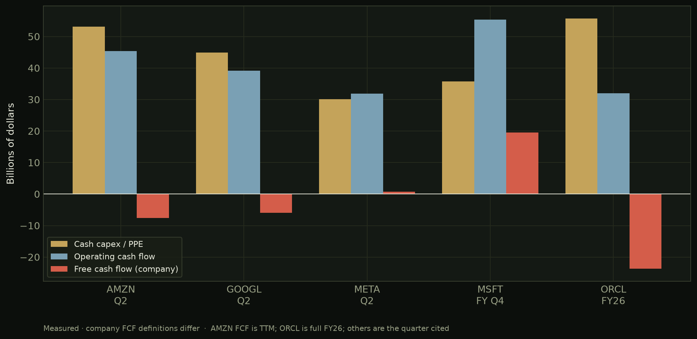
What this shows. Amazon’s trailing-twelve-month free cash flow is −7.6 billion dollars. Alphabet’s second-quarter free cash flow is −5.9 billion. Meta’s second-quarter free cash flow is 0.78 billion. Microsoft’s fiscal fourth quarter is still +19.6 billion. Oracle’s fiscal 2026 free cash flow is −23.7 billion. Gold bars are cash capex. Blue bars are operating cash flow.
How to read it. Oracle’s bars are a full year. Amazon’s red bar is trailing twelve months. The others are the quarter named on the axis. Demand lines in the same filings were still growing.
July’s capex guides went up, not down
Sequence step 6 in the unwind plan is a hyperscaler capex cut. That step has not printed.
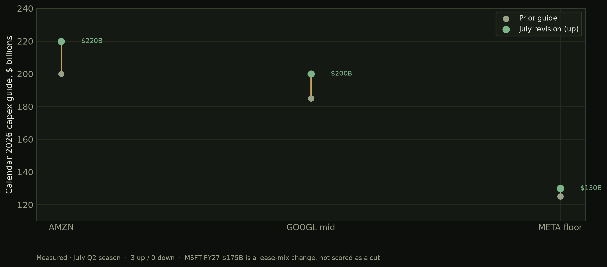
What this shows. Amazon raised calendar 2026 cash capex from 200 billion dollars to 220 billion. Alphabet’s midpoint moved from about 185 billion to 200 billion. Meta raised the floor from 125 billion to 130 billion. Count: three up, zero down. Microsoft’s fiscal 2027 outlook of 175 billion is a lease-mix change and is not scored as a cut.
Why H4 fails as regime change. A boom that is still raising the spend envelope is not a completed unwind, even if free cash flow is compressed.
When capex exceeds operating cash flow
A ratio above 1.0 means the company spent more cash on equipment in the period than operations produced.
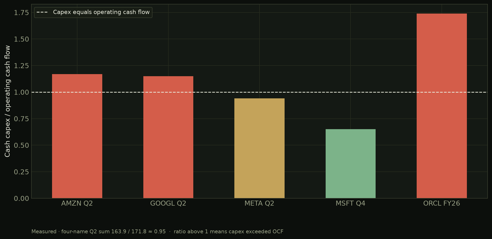
What this shows. Amazon 1.17, Alphabet 1.15, Meta 0.94, Microsoft 0.65, Oracle fiscal 2026 1.74. The four-name second-quarter sum is 163.9 / 171.8, about 0.95. H2 is live on cash and not live on demand. The turning print is a guide cut, which has not printed.
Index and credit
The cap-weight index is still a concentrated bet
These are SPY holding weights on 4 September 2026. Adding them gives a Mag7 reconstruction of about 33.6 percent. Top-10 of SPY was 37.83 percent.
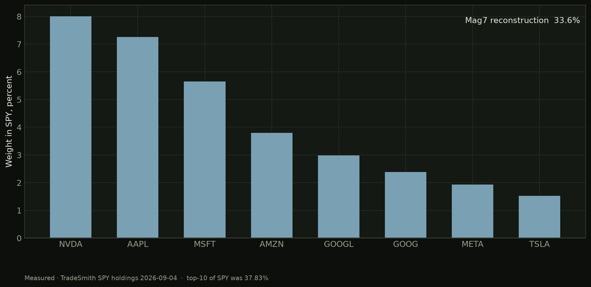
What this shows. NVIDIA alone is 8.01 percent of SPY. Early-June commentary put Mag7 near 35 percent. The current reconstruction is modest deconcentration, not a collapse. Commentary about the June peak is Hypothesis. The 4 September weights are Measured.
Equal-weight has been leading
RSP holds the S&P 500 names in equal size. SPY holds them by market cap. When RSP leads, the average stock is beating the giants.
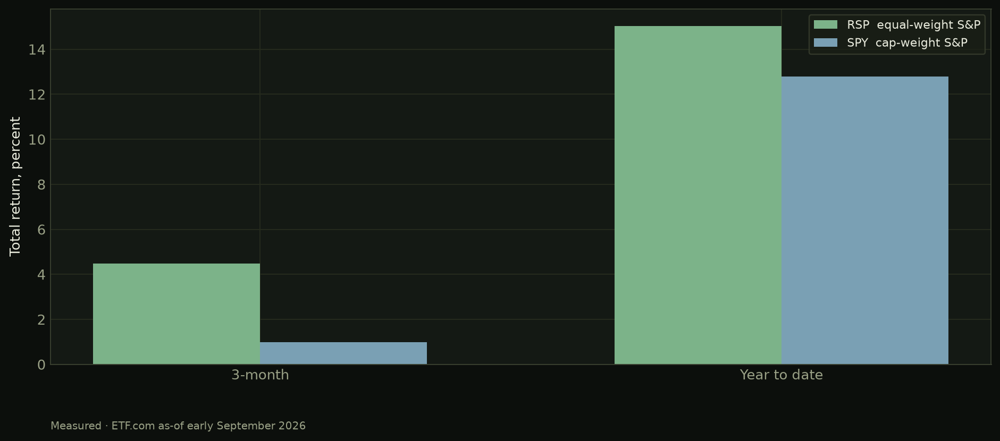
What this shows. ETF.com as of early September 2026: RSP three-month +4.48 percent versus SPY +0.99 percent. Year to date RSP +15.04 percent versus SPY +12.80 percent. That is partial evidence for H1, not a completed deconcentration.
Stress printed at the rim, not as a missed payment
Equity and the debt stock are Measured. The CDS path is secondary tape, tagged Hypothesis-adjacent.
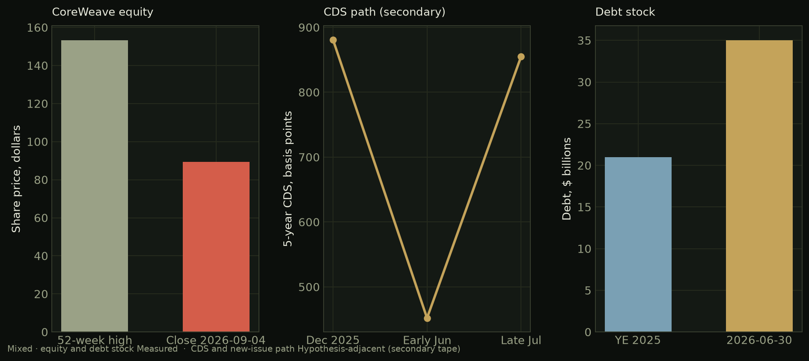
What this shows. CoreWeave closed at 89.36 dollars on 4 September 2026, about 42 percent below the 52-week high of 153.20. Debt was about 35 billion dollars on 30 June 2026 versus about 21 billion at year-end 2025. Five-year CDS went from about 452 basis points in early June to about 855 in late July, after about 881 in December 2025. That is a round-trip, not a new peak. Financing still closed. No missed-payment print was found in this pack.
How to read it. A bounce in the share price is an equity mark. It does not retire the debt stock or the guarantee book.
The hub
NVIDIA’s data-center engine is still intact
Layer C in the unwind sequence is supplier earnings. This quarter does not break it.
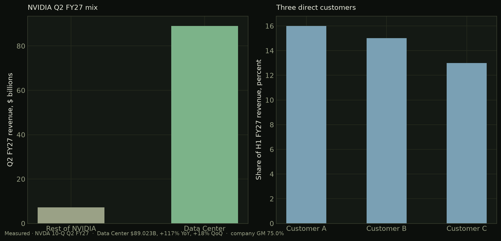
What this shows. Data Center revenue was 89.023 billion dollars in fiscal second quarter 2027, +117 percent year over year and +18 percent quarter over quarter, out of 96.221 billion total. Company gross margin was 75.0 percent. One direct customer was 16 percent of revenue in the quarter. Three directs were 16, 15, and 13 percent of the first half. Shares closed at 230.36 dollars on 4 September, about 2.6 percent below the mid-May high near 236.54.
Why this sits next to falling token prices. H5 can be live on the cheap tier while the hub that sells the chips is still printing growth. Those are different clocks.
Tokens sold and utilization are still blank
A rate card is not utilization. A rental series is not volume. This panel is empty on purpose.
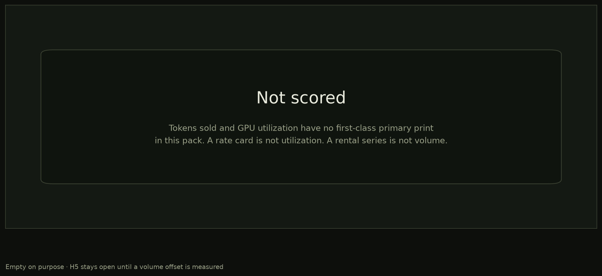
What this shows. Nothing, by design. H5’s kill condition includes a primary volume offset. Until a first-class print of tokens sold or GPU-hours consumed exists in this folder, do not infer that cheaper tokens were “made up in volume.”
What would fill it. A provider disclosure of tokens served, or a utilization series with a named primary source. Do not invent the stub ahead of that print.